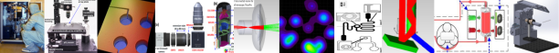

Optics and Biomedical engineering
Software development
Publications

Maskless lithography (Low cost maskless exposure device)
Component architecture in MED. The special design of projector installation mechanism and microscope holder provide maximum translational and rotational degrees of freedom which help to interconnect microscope and projector efficiently. Inset: the complete device with closers and axes and rotation stages.
Schematic of the MED and illumination capture arrangement.
Article link 1
Article link 2